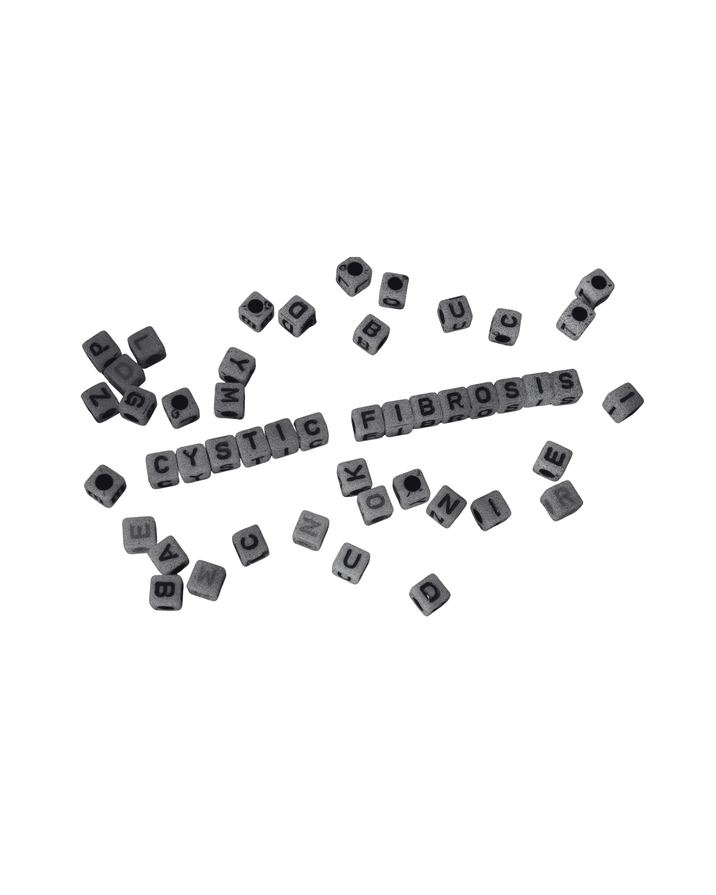

Mucoviscidose
Graduate Program · Recherche
Des sujets différents, une même démarche.



Graduate Program · Recherche
« DIRE ET VIVRE LA « RÉVOLUTION KAFTRIO » : ETUDE DES ÉCHANGES ET DES EXPÉRIENCES DANS UN COLLECTIF NUMÉRIQUE DE PATIENTS ATTEINTS DE MUCOVISCIDOSE »
Cette recherche vise à mieux comprendre la manière dont le traitement Kaftrio est perçu, discuté et vécu par les personnes concernées, à travers les échanges observés dans le groupe Facebook. Les résultats devraient contribuer à une meilleure compréhension du rôle des espaces numériques de santé dans la construction du savoir profane, du soutien entre pairs et des formes d'expression de la maladie chronique. Ce travail vient également nourrir la réflexion des associations et des professionnels sur les manières d'accompagner les patients dans un contexte où les échanges en ligne occupent une place de plus en plus centrale dans la vie quotidienne et le parcours de soin.
Au-delà d'un travail académique de recherche, cela a aussi été une opportunité de contribuer à une longue étude qui regroupe plusieurs universités françaises ainsi que deux associations dédiées à la mucoviscidose.
Mémoire · Recherche
« VIVRE AVEC DE L'ENDOMÉTRIOSE À L'ÈRE DU NUMERIQUE. CONSTRUCTION D'UNE SORORITÉ EN LIGNE ENTRE QUÊTE D'INFORMATION ET SOUTIEN DES PATIENTES FACE À LA MALADIE »
Dans cette recherche, il a été question d'explorer un phénomène encore peu étudié dans le champ des sciences sociales : l'émergence d'espaces numériques centrés sur l'endométriose, dans lesquels les patientes prennent une part active à la circulation des savoirs, à l'entraide et à la reconnaissance collective de leur expérience. J'ai cherché à comprendre comment le numérique vient pallier certains manques dans la prise en charge médicale et sociale de cette pathologie. Au fil de cette recherche, il est apparu que le sujet de l'endométriose ne se limite pas à rappeler l'invisibilisation de cette maladie. Il agit également comme un révélateur de tensions sociales, symboliques et institutionnelles autour de la place du corps féminin et de la douleur. Les dispositifs numériques peuvent alors jouer un rôle essentiel dans le « travail émotionnel », dans l'accompagnement par les pairs et dans la construction d'un sentiment de sororité. Ils permettent un espace de soutien mutuel où chaque interaction contribue à reconstruire un sentiment de légitimité. Ainsi, chaque échange participe à la construction de savoirs expérientiels : les trajectoires individuelles finissent par former un repère collectif auquel d'autres peuvent se référer.
Mon jury de mémoire a été tellement satisfait de ma recherche qu'il m'a suggéré de candidater au Graduate Program DIGIS et m'a soutenue à chaque étape de ma candidature.
Recherche · Production de connaissance
« CHATSTS : UN DUO ENTRE L'IA ET L'HUMAIN PLUS PROMPT À EXPLORER LA PRODUCTION DE CONNAISSANCE EN STS ? »
Dans ce travail, j'analyse la collaboration entre l'humain et l'intelligence artificielle dans la production de savoirs académiques, plus précisément dans le champ des sciences et techniques (STS). À travers une expérimentation avec ChatGPT, je montre que l'efficacité de cet outil dépend directement de la précision des prompts ainsi que de l'attribution d'un rôle social spécifique à la machine, en l'occurrence celui de sociologue au Centre de Sociologie de l'Innovation (CSI). Ma recherche met toutefois en évidence des limites techniques importantes, notamment les hallucinations factuelles et les bibliographies erronées, qui nécessitent une supervision humaine constante afin de vérifier les informations produites. En mobilisant des concepts issus de la sociologie de la traduction, j'attribue à l'IA un rôle d'acteur au sein d'un « quasi-laboratoire » numérique. Le cœur de cette recherche repose sur une interaction qui illustre une co-évolution sociotechnique : en tant qu'utilisatrice, je m'ajuste à l'algorithme, tandis que celui-ci s'adapte à mes instructions afin de co-construire de la connaissance.
Il s'agissait de ma première recherche sur un objet numérique, cette recherche a été réalisée en troisième année de licence.